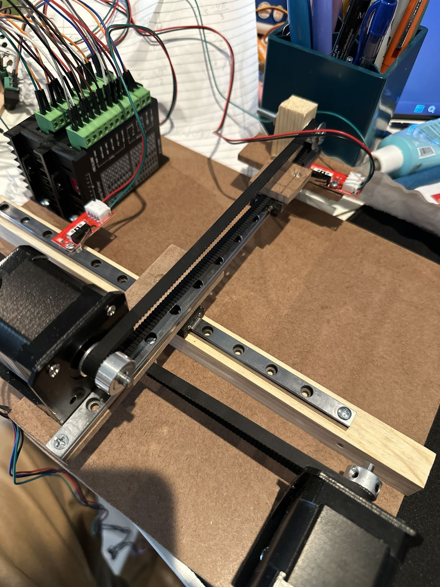

RevA
The first proof of concept: steel linear rails screwed to a wood and MDF base, belt-driven by two stepper motors, with an Arduino running the motion and a stylus arm to touch the screen. The goal was just to prove the gantry could hit points on the phone reliably.
What I learned
The wood frame flexed and shifted, so positions drifted between taps and I had to re-home constantly. It worked well enough to show the idea was possible, but not accurate enough to play the game.
